4.1 Common RGB Color Spaces
An RGB color space is defined by its primaries, white point and transfer functions, as explained in depth in Section 2.4.8. A color encoding pairs the properties of the color space with a specific digital encoding of values in the space. Encoded values may be represented either as floating point numbers or by integers at a specific bit depth. The equations given in the following sections are for the floating point form. The primaries and white points of some common color spaces are plotted on the CIE 1931 chromaticity diagrams below. The subsequent sections give more detail on the usage of each color space, together with their transfer functions.
- Rec. 709
- BT.1886
- sRGB
- Rec. 2020
- ST 2084 / PQ
- Hybrid Log Gamma (HLG)
- P3 DCI
- P3 D65
- X’Y’Z’
- ALEXA LogC
- Blackmagic Film
- Canon CLog
- GoPro ProTune
- Panasonic V-Log
- RED Log3G10
- Sony SLog
- ACES2065-1
- ACEScg
- ACEScc
- ACEScct
- Cineon
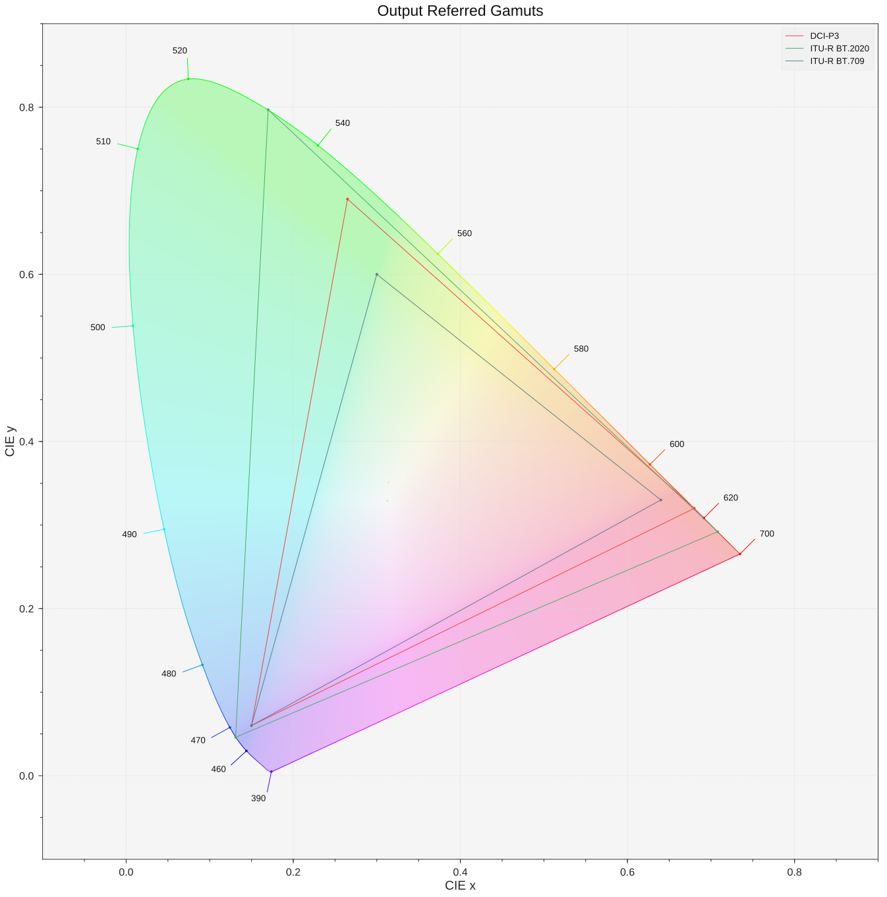
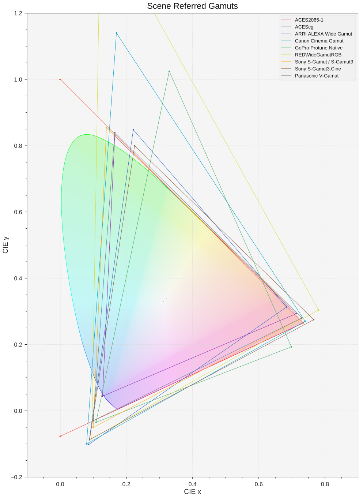
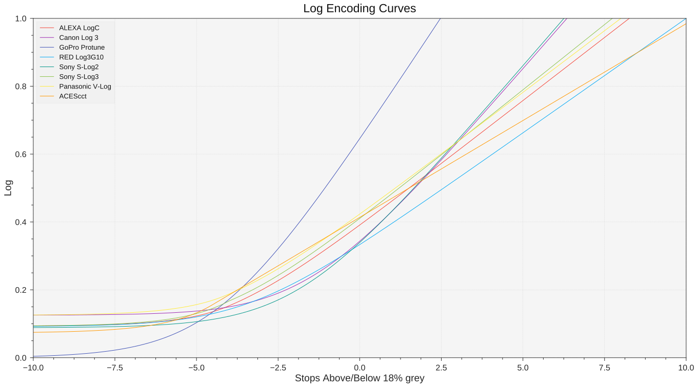
Output-referred spaces have only an Electro-Optical Transfer Function (EOTF) which defines the relationship between code values (CV) and display light. This may be defined relative to display peak luminance, or as an absolute encoding in terms of display cd/m2 . Scene-referred spaces have only an Opto-Electrical Transfer Function (OETF) which defines the relationship between relative scene light and the encoded value. Some encodings, such as Hybrid Log-Gamma (HLG), define a relationship to both scene and display light, so have both an OETF and and EOTF. An EOTF is not necessarily the inverse of the corresponding OETF. The combination of the two is referred to as an Optical to Optical Transfer Function, or OOTF.
Images are shown in the different color spaces but tagged with an sRGB ICC profile. Thus the code values in the images will be presented without a transform for the viewer’s display, assuming that the viewer is using a sRGB monitor. This is useful to observe the distribution of code values in a particular encoding, but should not be used to subjectively judge the image.
The complete set of all transfer, encoding and decoding functions is available in Colour Science for Python, together with the matrices to transform to and from CIE XYZ, referred to as the Normalized Primary Matrix (NPM) of a color space.
4.1.1 Rec. 709
ITU-R BT.709 (International Telecommunication Union, 2015b), commonly referred to as Rec. 709, specifies a D65 white point and a piecewise transfer function. It is important to be aware that the transfer function given for Rec. 709 is an encoding function (OETF) for a video camera, not an EOTF for a display, making it a scene-referred encoding. It is, in fact, rare to find the Rec. 709 curve implemented exactly in any camera, as video cameras often include a ’knee’ for highlight compression and other user controls which cause the image to diverge from the standard. This means that it is not normally possible to accurately invert Rec. 709 material to scene-referred linear. Where necessary, ITU-R BT.2087-0 recommends the use of a simple square function to revert material from a Rec. 709 camera to scene-referred linear.
The transfer function specified in Rec. 709 is:
| (4.1) |
Where is scene light, normalized to 0-1, and is the encoded value. This output value is also normalized to 0-1 but is usually stored as an integer, in either full or legal range (see Section 4.7).
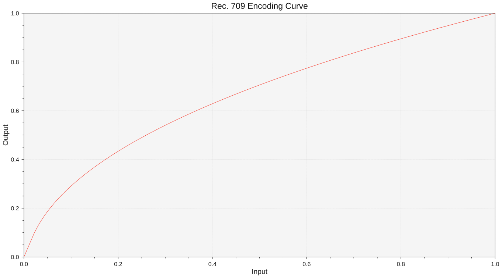
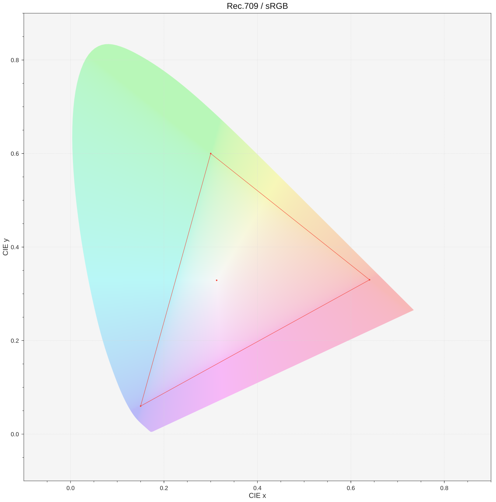
| Red | Green | Blue | White Point |
| 0.640, 0.330 | 0.300, 0.600 | 0.150, 0.060 | 0.3127, 0.3290 (D65) |
4.1.2 BT.1886
Copyright © A.M.P.A.S
ITU-R BT.1886, commonly known as BT.1886, specifies the EOTF used for display of Rec. 709 material, as no EOTF was specified originally by ITU-R BT.709. It is a variation on a gamma curve, intended to more accurately replicate the response of legacy CRT displays. The BT.1886 equation takes account of the black level of the display in use, but for an ideal display which is capable of producing a true black, BT.1886 becomes a pure 2.4 gamma power law curve. However in calibration, standard practice is to set all displays to a non-zero black level in order to compensate for ambient light and other factors.
A BT.1886 display uses the primaries as defined by Rec. 709, and the following EOTF:
| (4.2) |
Where is the screen luminance and the encoded signal (ranged 0-1). The constants and are calculated from the target black level and white level (normally 100 cd/m2 for a grading reference monitor, but often considerably higher for a consumer TV) using the following equations:
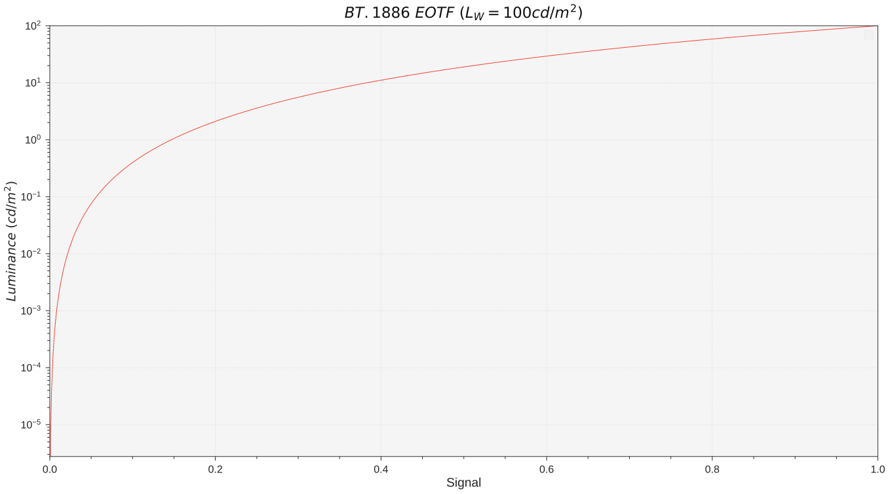
When encoding desired display colorimetry for BT.1886 display, where the black level of the display is unknown (as is always the situation when delivering video for a wide audience) the recommended approach is to use a value of zero for . For this reason, the ACES Rec. 709 Output Transform uses pure 2.4 gamma.
4.1.3 sRGB
Copyright © A.M.P.A.S
Due to differences in inherent display technologies, there is substantial variation in the appearance of RGB when the same code values are sent to multiple computer displays, making the unambiguous distribution of RGB imagery difficult. As a solution, a standard idealized computer display has been defined, sRGB, which real displays often attempt to reproduce. The intent of sRGB (Standard RGB) is to define the color characteristics of a standardized RGB display, such that imagery on one monitor matches the appearance of a different monitor. Older display technologies (such as CRTs) naturally approach the sRGB specification. However, modern technologies, such as LCD and OLED which have very different inherent image responses, typically provide an option to emulate the sRGB specification to maintain compatibility with existing imagery.
sRGB uses the primaries and D65 white point specified in ITU-R BT.709, and thus can represent the same gamut of colors as Rec. 709.
The sRGB encoding function is defined as:
| (4.3) |
Where is the luminance of the image normalized to the range 0-1 and is the resulting encoded signal. The sRGB encoded signal is commonly stored as an 8 bit integer, which would be .
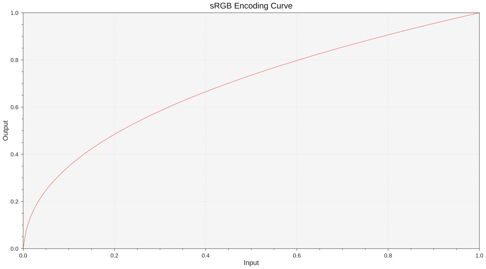
The sRGB decoding function is defined as:
| (4.4) |
There has been some debate about the EOTF to be used for displaying sRGB image data. Since the sRGB transfer function approximates 2.2 gamma, some have taken from the specification that it defines an OETF to be used when encoding image data for a display with 2.2 gamma, and that the linear portion near black exists only to minimize quantization error in integer implementations. Others contend that the sRGB decoding function should be used as the EOTF so that the sRGB curve can be used to exactly encode desired display colorimetry.
The IEC, who published the sRGB standard as IEC 61966-2-1:1999 (International Electrotechnical Commission, 1999) have confirmed that the proper EOTF for sRGB is the decoding function given above, and that the encoding function is intended to encode display colorimetry.
Since there are still some who recommend calibrating sRGB monitors to pure 2.2 gamma, outside a situation where both the encoding of the image data and the calibration of the display are within your control, it is not possible to be certain of the exact luminance which will result on an end user’s sRGB display from a given encoding.
The situation is complicated still further by viewing environment. One of the aims of the sRGB specification was to define a standard for display of video material on a computer monitor such that there is a perceptual match between a video monitor in its expected viewing environment and a computer monitor in a brighter environment. This would suggest that video images should not be modified for viewing on an sRGB monitor, as the necessary compensation is already built into the display. ACES provides separate Output Transforms for Rec. 709 and sRGB, intended to produce the same display colorimetry on the two display standards. This is however only an appropriate approach if the two displays are to be viewed in the same environment, defined as “dim” in the Output Transform.
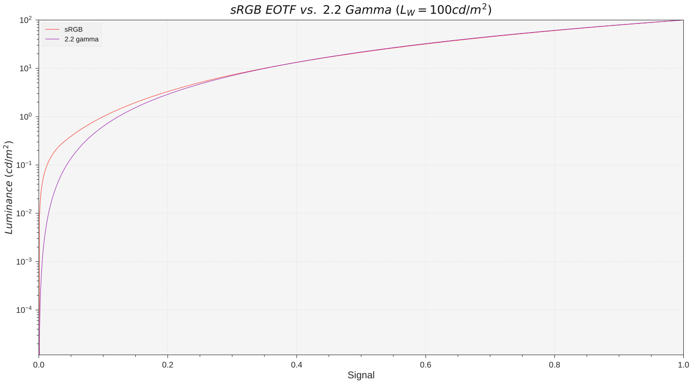
| Red | Green | Blue | White Point |
| 0.640, 0.330 | 0.300, 0.600 | 0.150, 0.060 | 0.3127, 0.3290 (D65) |
4.1.4 Rec. 2020
Copyright © A.M.P.A.S
ITU-R BT.2020 (International Telecommunication Union, 2015a), commonly called Rec. 2020 defines a color space wider than Rec. 709, using D65 white, which was initially defined for wide gamut standard dynamic range encodings, but whose primaries have been adopted for HDR. These primaries are in fact normally used simply as encoding primaries, with the colors limited to a smaller gamut such as P3, since no current display covers the Rec. 2020 gamut. Like Rec. 709, the Rec. 2020 specification defines an encoding curve for a hypothetical SDR camera which is in fact almost never used. The OETF defined by Rec. 2020 is:
| (4.5) |
The values of and are defined as 1.09929682680944 and 0.018053968510807 respectively at full precision, but the document clarifies that for practical purposes in 10-bit systems the values 1.099 and 0.018 can be used (making this the same equation as that for Rec. 709) and for 12-bit systems, 1.0993 and 0.0181 can be used.
In SDR, Rec. 2020 specifies a display with a BT.1886 EOTF. But in fact, Rec. 2020 is more commonly used only as a set of primaries for an output referred encoding, together with either an ST 2084 or HLG transfer function.
| Red | Green | Blue | White Point |
| 0.708, 0.292 | 0.170, 0.797 | 0.131, 0.046 | 0.3127, 0.3290 (D65) |
4.1.5 ST 2084 / PQ
Copyright © A.M.P.A.S
SMPTE ST 2084 (Society of Motion Picture and Television Engineers, 2014) is an output-referred encoding used for high dynamic range displays, normally in conjunction with Rec. 2020 primaries. It can encode values up to 10 000 cd/m2, and was originally specified by Dolby under the name PQ, for Perceptual Quantizer. To encode such a wide range without visible banding, ST 2084 requires at least 12-bit processing to be used in production. For delivery at least 10 bits are required, and although visible banding is possible at this bit depth, experiments by Dolby have indicated that noise present in real-world images makes this banding imperceptible. Integer codings may use either “narrow range” or “full range” (see Section 4.7).
Because PQ is perceptually uniform, it can be a useful working space for applying output-referred grades, or as a shaper for LUTs (see Section 4.4.3) and some game engines do exactly this, transforming from linear to PQ in order to apply a look as a 3D LUT, and then transforming back to linear for further processing. It should not be used for scene-referred grading, as negative values are clipped.
ITU-R BT.2100 (International Telecommunication Union, 2016) specifies both an OETF and EOTF for PQ, which are not the inverse of one another, creating a non-unity OOTF. While in theory, this allows PQ to be used as a scene-referred encoding, in practice, no digital cinema camera currently implements this, and the encoding function exists in the spec only for completeness. It is important to be aware that the BT.2100 OETF is not the same as the OETF specified in ST 2084, which is simply the inverse of the EOTF.
The ST 2084 EOTF is an absolute encoding, defined by the following equation:
| (4.6) |
Where L is the display luminance in cd/m2 and the constants are:
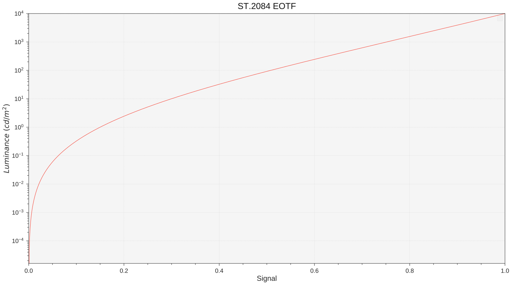
While the output of the ST 2084 EOTF is defined in absolute units of cd/m2, the input to the function is less rigorously defined. As such, there is some debate as to what transform to apply to scene-referred linear data before converting to ST 2084. The most basic approach would be to simply scale the scene-referred linear values to set diffuse white to a particular display brightness and then encode with the inverse of the ST 2084 EOTF. However, this would make display light directly proportional to scene light and, as has been discussed in Section 2.5, due to the difference in absolute luminance and viewing environment, this will not normally give a perceptual match. Some form of view transform is usually required. This can be left to the colorist to add as part of the look, but a base transform which adds some contrast and roll-off in the highlights and shadows can be beneficial. It is also worth bearing in mind that the traditional lift, gamma, and gain operators are particularly unsuitable for acting on ST 2084 image data, where 0-1 represent zero to 10 000 cd/m2. Highlights, in particular, can swing uncontrollably into extreme values as a result of small changes. Modern grading systems offer alternate grading operators tailored to the needs of HDR grading.
The most universally available view transforms for HDR are the ACES Output Transforms. Versions are included for 1000, 2000, and 4000 cd/m2. These aim to provide an HDR image which is perceptually similar to the result of the ACES SDR Output Transforms, placing diffuse white at about 107 cd/m2 (in ACES 1.1, where 86 cd/m2 was used by ACES 1.0) and reserving the higher luminances for specular highlights and in-frame light sources. This is in line with the original intent of the ST 2084 specification, which says that it “is intended to enable the creation of video images with an increased luminance range; not for the creation of video images with overall higher luminance levels.” However, as more experience has been gained with delivering in HDR, many people have come to feel that a higher level for diffuse white is preferable and that, particularly given the higher brightnesses of current consumer SDR televisions and computer displays, this gives a better perceptual match between SDR and HDR versions of the same image. For broadcast programs ITU-R BT.2408-0 recommends setting diffuse white at 203 cd/m2, but acknowledges that it is a creative choice. This kind of exposure offset can be achieved in ACES as part of an HDR specific Look Transform which simply applies gain in linear. The parametric Output Transforms which form part of ACES 1.1 include a parameter for “mid-point luminance” (18% grey) but this is not currently exposed to end users and is fixed at 15 cd/m2 .
Some manufacturers implement view transforms for HDR in their cameras for on-set HDR monitoring, and provide LUTs which match those transforms for use in post. ARRI’s ALF-2 and RED’s IPP2 LUTs can be used as output transforms for LogC/ALEXA Wide Gamut and Log3G10/RED Wide Gamut working spaces respectively, and other color encodings can be transformed to those to make them suitable as input for the LUTs. Some grading systems implement these as options in their color management pipelines, and also offer their own proprietary view transforms. When using a proprietary tone mapping algorithm it is important to ensure that a method is available, usually by baking a LUT, for implementing the transforms in other software.
4.1.6 Hybrid Log Gamma (HLG)
Notice that the image looks “normal”, if somewhat muted on an SDR display.
Copyright © A.M.P.A.S
Hybrid Log Gamma is an encoding designed by the BBC in collaboration with NHK. It is defined as a scene-referred encoding so is based on an OETF but also defines an EOTF to work in conjunction with it. When concatenated, these produce the encoding’s OOTF, a system gamma, which defines the relationship between scene light and display light. The HLG OOTF is a power law function whose exponent is dependent on the peak white of the particular display. It is also, unlike most transfer functions, not simply applied to each RGB component independently, but rather it incorporates the luminance value, a weighted sum of the three linear components, in the calculation.
Part of the design intent of HLG is that the OETF encodes a high dynamic range scene using a curve which is broadly similar to that which might be used by a traditional SDR video camera with a highlight compressing ‘knee’. This means that an HLG signal displayed on an SDR monitor, which has no way of interpreting the signal as HDR and simply applies a BT.1886 EOTF, will produce a reasonable looking image. Because HLG encodings normally use Rec. 2020 primaries, rather than Rec. 709, the image is likely to look somewhat desaturated, but it will be watchable. This backward compatibility is intended to enable HLG signals to be processed through legacy SDR infrastructure in studios and outside broadcast trucks, without all monitors needing to be replaced with HDR displays. In order to provide this kind of compatibility, it is recommended to set exposure so diffuse white falls at 75% in HLG. On a 1000 cd/m2 display this will produce the same 203 cd/m2 luminance as using ST 2084 according to ITU-R BT.2408-0, as mentioned above.
Whilst HLG provides additional headroom for highlights by ‘emulating’ a traditional SDR camera knee, a large increase in dynamic range is also achieved by no longer using a linear part of the OETF near black. This is a significant difference from the SDR Rec. 709 curve. Not having a linear portion to the OETF means that noise reduction in the blacks must be achieved by alternative processing in the camera.
The HLG encoding function is defined by ITU-R BT.2100 (International Telecommunication Union, 2016) as:
| (4.7) |
Where the constants are:
And L is normalized such that the entire scene dynamic range to be encoded is scaled to the 0-1 range.
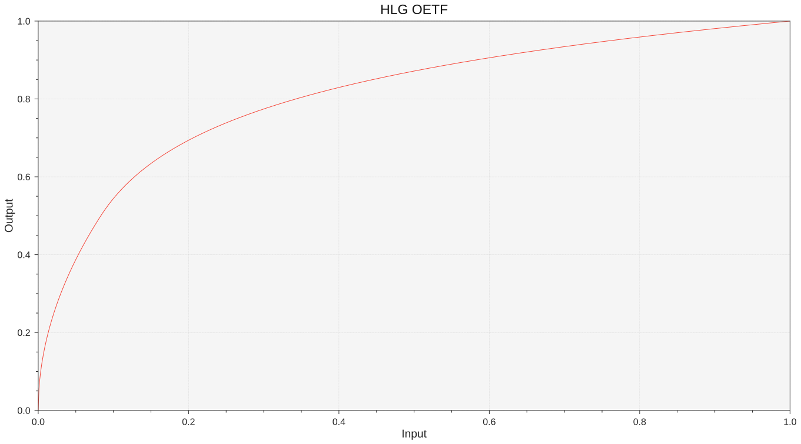
The HLG EOTF is defined in terms of its OOTF, which is:
Where [, , ] is the scene light for the three components, and [, , ] is the display light for the components. is the scene luminance, calculated as:
| (4.9) |
And:
The values of , and are derived by inverting the encoding function for each component using the following formula:
| (4.12) |
| (4.13) |
Where:
| (4.14) |
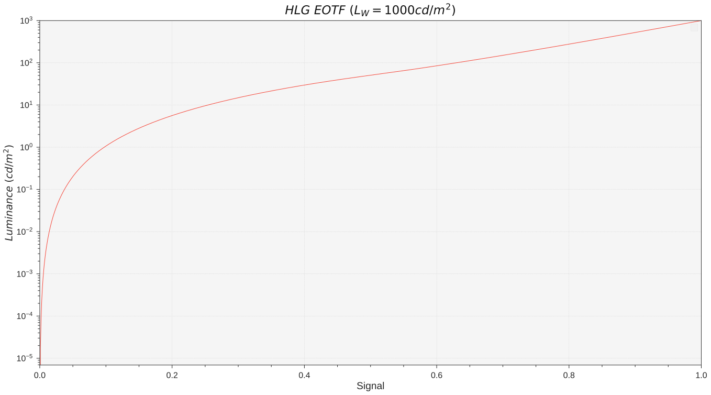
In practice, while HLG may be used as a scene referred encoding in situations such as live sports broadcasting, an HLG deliverable is often created from an ST 2084 display-referred master by applying the ST 2084 EOTF followed by the inverse HLG EOTF for a notional 1000 cd/m2 display to compute the HLG signal needed to produce the same displayed image as the ST 2084 signal.
4.1.7 P3 DCI
Note that this output transform includes a “D60 sim”, giving the image a slight magenta tint when viewed on an sRGB (D65) display. On the intended P3 DCI display neutrals would appear with ACES (D60) white.
Copyright © A.M.P.A.S
DCI-P3 is a color space commonly used in digital cinema production, as it is well suited to theatrical presentation since it describes the native primaries of a DMD projector. Whereas the sRGB specification uses a color encoding suited for the desktop environment, the DCI-P3 specification uses a color encoding suited for theatrical luminance levels.
A projector calibrated to DCI-P3 uses a pure 2.6 gamma EOTF with white point chromaticity coordinates of 0.314, 0.351. The P3 primaries are wide-gamut relative to desktop standards; pure sRGB red is relatively desaturated with a distinctly orange-red hue, while pure P3 red is “blood” red, almost on the spectral locus. The DCI white point is not necessarily the creative white point used in mastering. Productions are free to master to any white point they prefer, provided all mastered colors fall within the allowed DCI gamut. Indeed, for artistic considerations, the DCI white point is often avoided due to its greenish cast relative to the daylight curve.
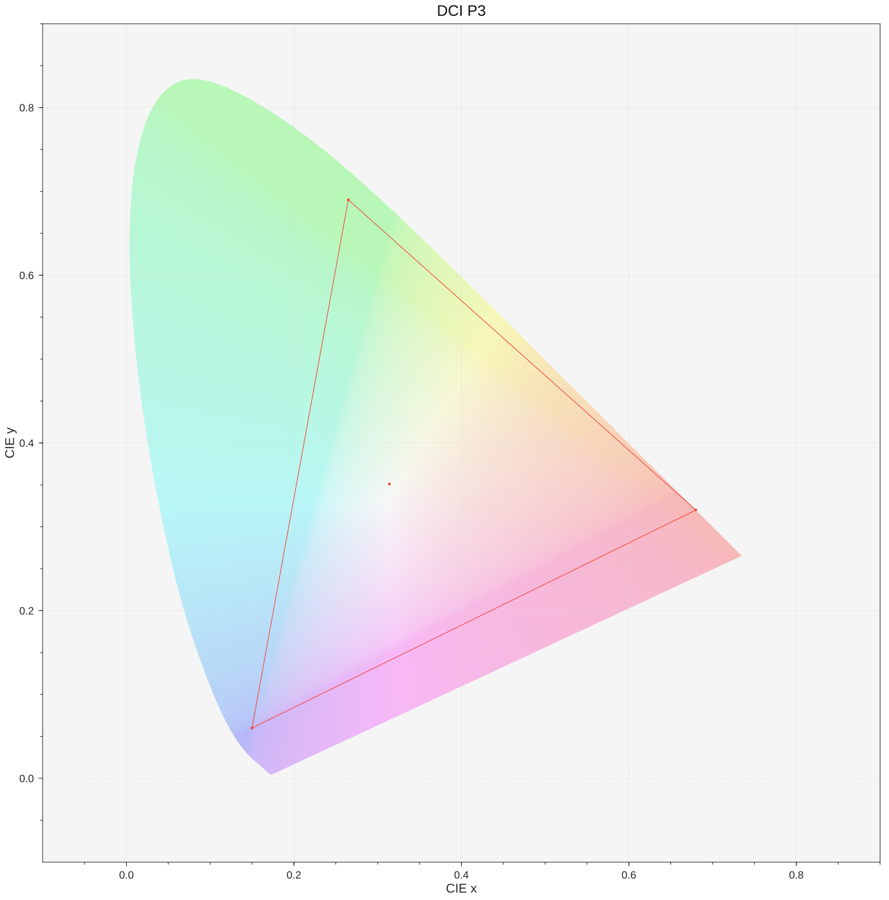
| Red | Green | Blue | White Point |
| 0.680, 0.320 | 0.265, 0.690 | 0.150, 0.060 | 0.314, 0.351 |
4.1.8 P3 D65
Copyright © A.M.P.A.S
The Primaries of P3 are also used in combination with a D65 white point. Where projectors are calibrated to P3 D65 the same 2.6 gamma as P3 DCI is used, but for wide gamut desktop displays the sRGB EOTF is used. In addition, P3 D65 is often used as a “limiting gamut” when a wider gamut such as Rec. 2020 is used as the encoding gamut, but where the target display is not capable of covering that gamut.
| Red | Green | Blue | White Point |
| 0.680, 0.320 | 0.265, 0.690 | 0.150, 0.060 | 0.3127, 0.3290 (D65) |
4.1.9 X’Y’Z’
On an sRGB display it is low contrast (due to the 2.6 gamma) and the colors appear incorrect, since values are being interpreted as if they were .
Copyright © A.M.P.A.S
The Digital Cinema Initiative (DCI) specification (Digital Cinema Initiatives, 2018) defines the standard for digital cinema mastering and theatrical exhibition, including colorimetry. The encoding specified for DCP (Digital Cinema Package) mastering is (called “X-prime, Y-prime, Z-prime”). It is an output-referred, gamma 2.6 encoding of CIE-XYZ, with a reference white at 48 cd/m2. As the coding space spans an area larger than the visual gamut, the minimum display gamut specified by DCI is that of P3.
The intent of the coding space is output-referred, so that the full-color appearance of the theatrical imagery, such as any film emulation 3D LUTs, are fully baked into the image. Therefore, an image in is completely unambiguous; there should be essentially no color variation between properly calibrated theatrical digital projectors.
The DCI specification chose a gamma 2.6 encoding after a series of perceptual experiments using “golden-eye observers” to maximize the bit-depth fidelity under theatrical viewing conditions. DCI specifies 12 bits per channel, which is intended to prevent banding artifacts under even the most trying conditions. DCI also specifies a series of color patches which are useful in calibration. (Please refer to the DCI specification for additional details.) files are encoded using JPEG-2000 compression, which is a lossy, wavelet compression codec. No inter-frame compression is used, which allows for both forward and backward scrubbing. The DCI specification also defines two resolutions known as “2K” and “4K”. The 2K raster is 2048×1080 and the 4K raster is 4096×2160. DCI compliant films must fill at least one of these axes. Material with an aspect ratio of 1.85:1 (“flat”) is typically delivered for a 2K release at 1998×1080, and 2.39:1 (“scope”) is delivered for a 2K release at 2048×858. For 4K release, these sizes are doubled. DCP encoders accept 16-bit tiffs, so the convention is to utilize the full 16-bit coding range of 0-65535, and then to let the compressor just use the high order 12 bits.
The method for conversion from a DCI P3 to is:
| (4.15) |
Where , and are 2.6 gamma coded DCI P3 values in the range 0-1.
| (4.16) |
The matrix shown converts [1, 1, 1] to [3794, 3960, 3890], the reference code values for DCI white. A different matrix is needed for material mastered to a different white point, i.e. encoded for a projector with a different white point and a viewer adapted to that white. A change of creative white baked into a P3-DCI encoding (such as the ACES “D60 sim”) does not require a change of matrix.
The value of 48/52.37 is called the normalizing constant and is included to permit mastering with creative white points other than the DCI calibration white. Equal DCDM code values produce Equal Energy white (CIE Illuminant E - the result of a flat spectral power distribution). Unequal code values are needed to produce other whites, such as DCI white, or D65. If code values of [4095, 4095, 4095] produced Equal Energy white at 48 cd/m2, the values needed to produce D65 white at 48 cd/m2 would be [4016, 4095, 4232] and 4232 is outside the range possible with 12-bit integer coding.
See Kennel (2007) for additional details on mastering for digital cinema. The full DCI specification (Digital Cinema Initiatives, 2018) is freely available online; highly recommended reading for those involved in theatrical mastering.
4.1.10 ALEXA LogC
Copyright © A.M.P.A.S
LogC is the encoding used in the ARRI ALEXA series of cameras, including the AMIRA. It is used together with the ALEXA Wide Gamut primaries and a white point of D65. The exact encoding curve varies slightly with the Exposure Index (EI) set on the camera, keeping 18% grey to an encoded value of 400/1023, and applying highlight compression at EI values above 1600 to prevent sensor clipping falling above the LogC 0-1 range. The exact linearization curves for LogC at all EI values are included as 1D LUTs in the Input Transforms in the ACES GitHub repository, together with the Python code which generates those 1D LUTs. However, in many cases, the simplified form of the curve for EI800 is sufficient, for which the encoding function is:
| (4.17) |
At EI800 the values of the constants are:
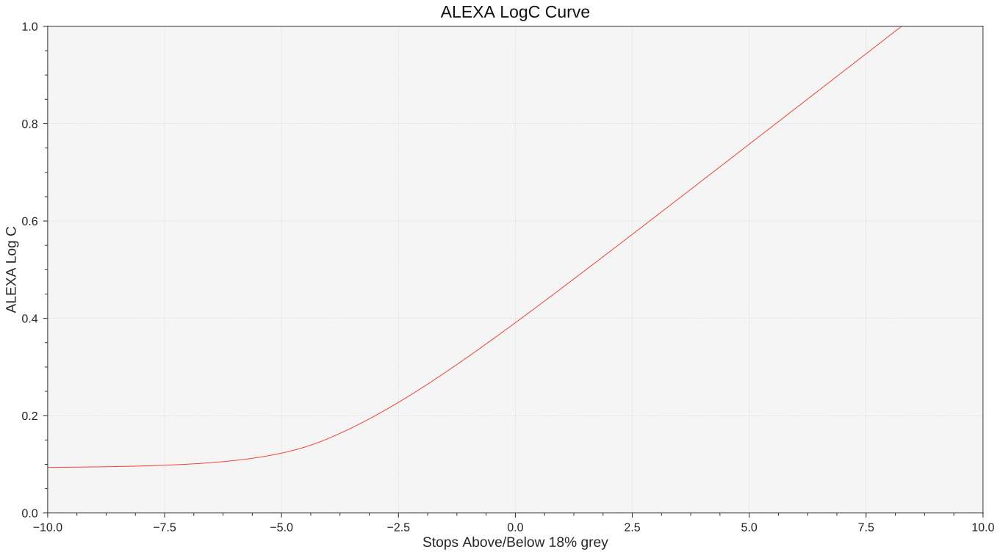
The decoding function is:
| (4.18) |
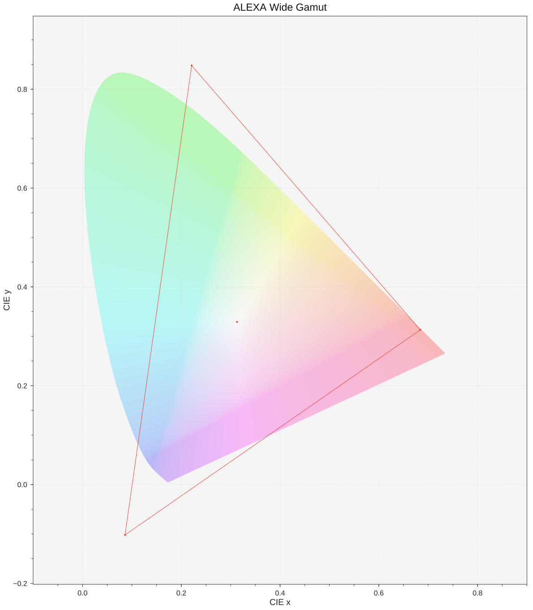
| Red | Green | Blue | White Point |
| 0.6840, 0.3130 | 0.2210, 0.8480 | 0.0861, -0.1020 | 0.3127, 0.3290 (D65) |
4.1.11 Blackmagic Film
Copyright © A.M.P.A.S
Cameras from Blackmagic Design (BMD) use different log encoding curves, depending on the model. The mathematical encoding curves are not currently published, and neither are the primaries. However 1D LUTs for linearization are provided with DaVinci Resolve, and these can be used in other applications. The encoding primaries of log material from Blackmagic cameras can be converted using the Color Space effect in Resolve.
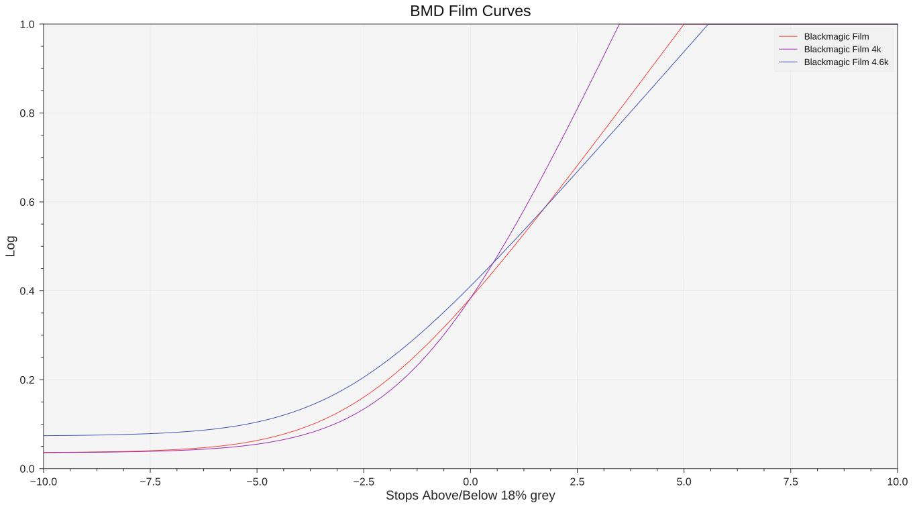
4.1.12 Canon CLog
Copyright © A.M.P.A.S
Canon cameras offer a range of options for encoding curves and primaries, making for a very large number of permutations. Primaries can be selected from Cinema Gamut, Rec. 2020 and Rec. 709 (see sections above for the latter three). For the encoding curve, there is a choice of Canon Log 1, 2 and 3. It is important to ascertain which primaries and Canon Log variant were used when shooting, in order to linearize correctly and transform to the working color space. Many applications are unable to read the Canon metadata which specifies the recording primaries and encoding curve, so it can be useful to open the media in the Canon XF Utility, available from Canon’s website, and make a note of the settings.
The latest iteration of Canon Log is Canon Log 3, for which the encoding function is:
| (4.19) |
A variation on these equations may be found in some places. The alternate form take as input what Canon refers to as “linear IRE”. This is given by dividing the more commonly used reflectance value by 0.9. Thus 18% grey would be input to the function not as 0.18, but rather as 0.2. Also the alternate function returns “IRE” but Canon Log image data is more likely to be stored as unscaled code values, so a full to legal scale (see Section 4.7) needs to be applied to the encoded data. As long as the inputs and outputs are properly scaled, the two versions of the equations will give the same result.
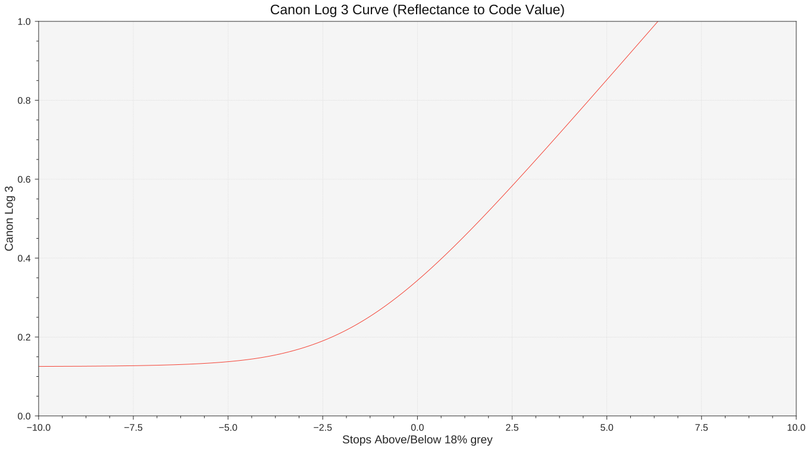
The decoding function for Canon Log 3 is:
| (4.20) |
Again, the alternate form (found in the ACES Input Transform, for example) takes “IRE” input, and returns “linear IRE”, so a legal to full scale is needed before the function, and the result must be multiplied by 0.9.
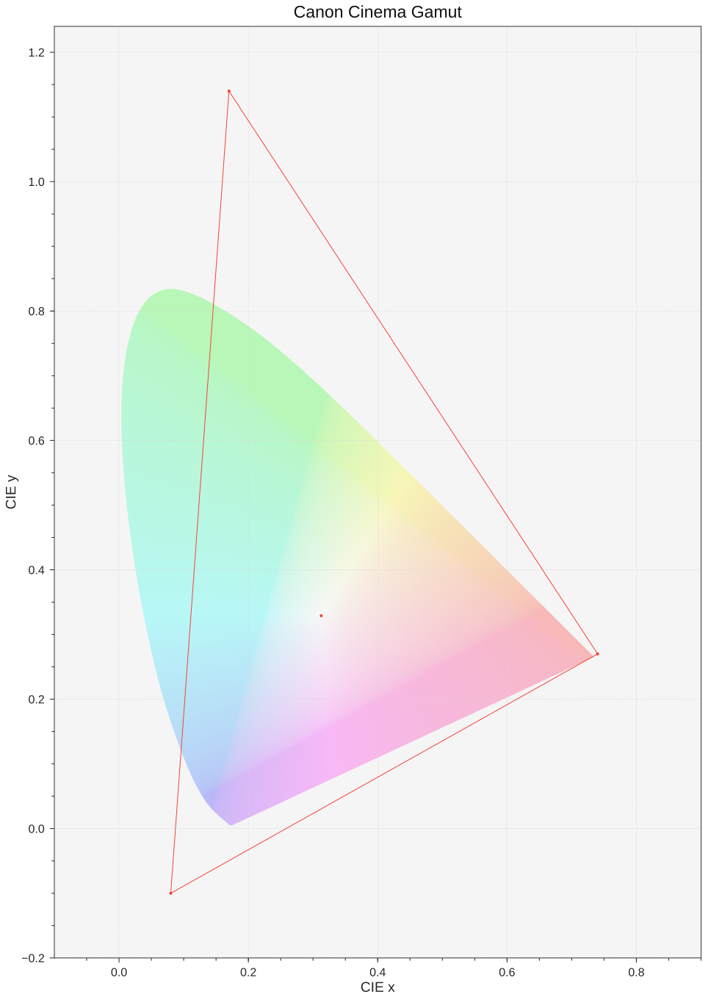
| Red | Green | Blue | White Point |
| 0.740, 0.270 | 0.170, 1.140 | 0.080, -0.100 | 0.3127, 0.3290 (D65) |
4.1.13 GoPro ProTune
Copyright © A.M.P.A.S
ProTune “Flat” is a log mode available in the GoPro range of action cameras. It allows disabling of much of the image processing normally applied in camera. The curve encodes the range 0-1 to log values in the range 0-1, so linearization will not yield values >1 unless gain is subsequently applied. Equally, the curve is not able to encode negative values, but because the sensor A/D has a black offset, this should be subtracted after linearization, which may result in some negative values.
The encoding function is:
| (4.21) |
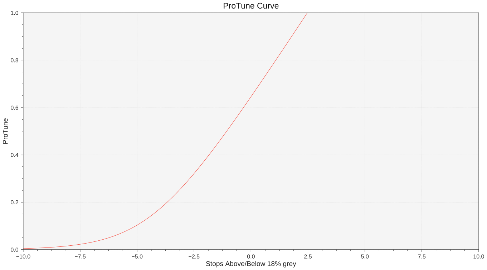
The decoding function is:
| (4.22) |
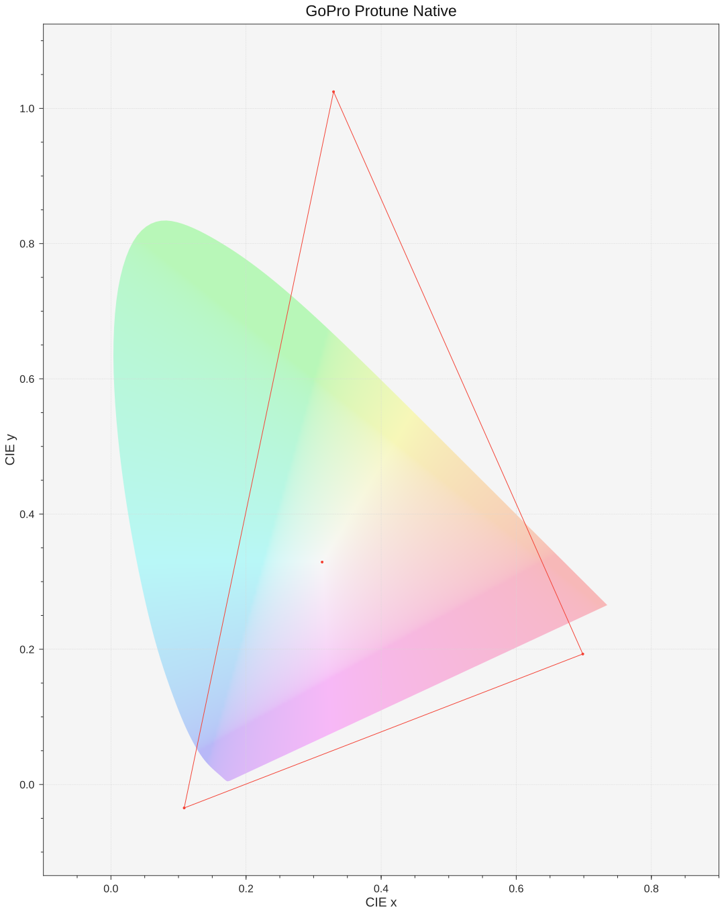
| Red | Green | Blue | White Point |
| 0.698448, 0.193026 | 0.329555, 1.024597 | 0.108443, -0.034679 | 0.3127, 0.3290 (D65) |
4.1.14 Panasonic V-Log
Copyright © A.M.P.A.S
V-Log, paired with V-Gamut is the log recording format used by the Panasonic Varicam range of cameras, as well as the AU-EVA1. Some of the lower end Panasonic cameras such as the Lumix range offer V-Log L recording. This uses exactly the same curve as V-Log, simply with the upper part of the dynamic range unused, so the same linearization function can be used.
The V-Log encoding function is:
| (4.23) |
Where the constants are:
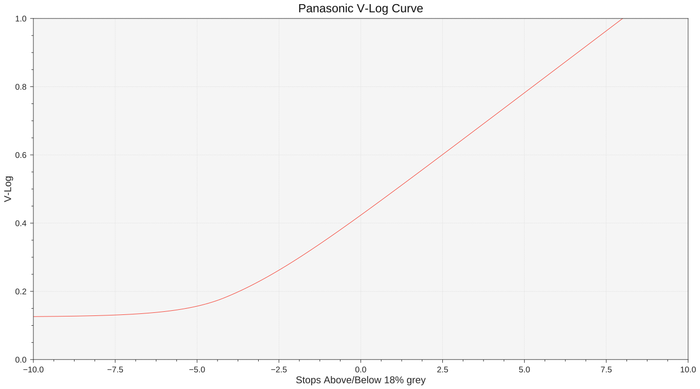
The V-Log decoding function is:
| (4.24) |
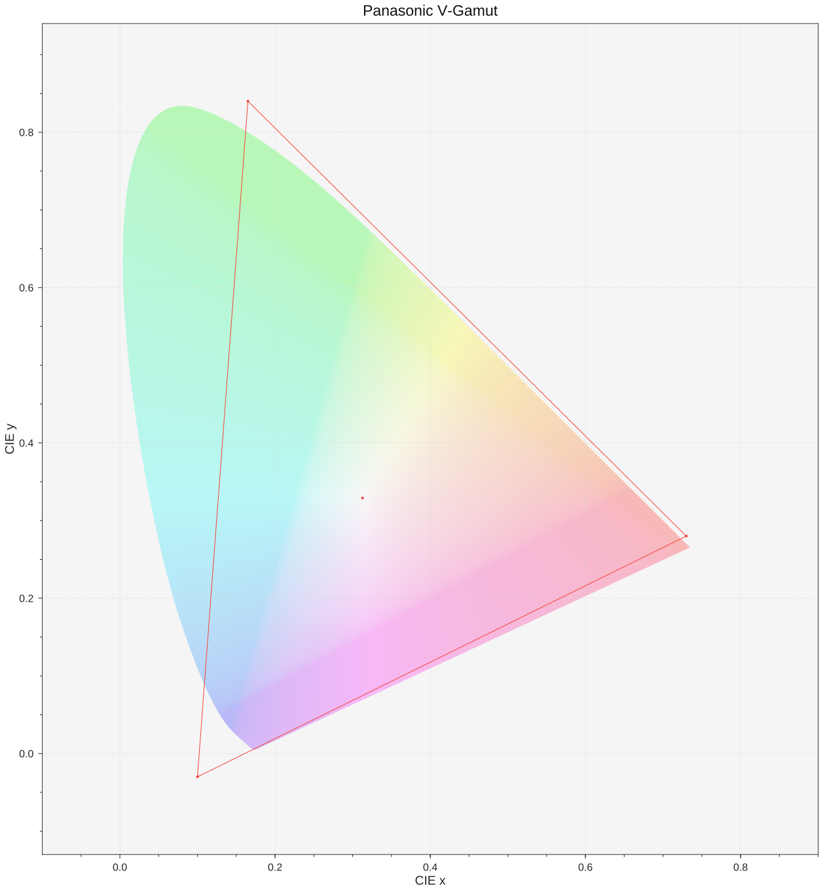
| Red | Green | Blue | White Point |
| 0.730, 0.280 | 0.165, 0.840 | 0.100, -0.030 | 0.3127, 0.3290 (D65) |
4.1.15 RED Log3G10
Copyright © A.M.P.A.S
Over the years, RED have used various log encodings and primaries with their cameras, and the details of these have not been published. The current RED IPP2 image processing uses primaries called RED Wide Gamut RGB, paired with a log encoding called Log3G10, the details of which have been published in a white paper (). The numbers 3 and 10 in the name indicate that 18% grey is encoded as , and the curve encodes 10 stops above mid-grey; that is to say, is encoded as 1.0 in Log3G10.
The Log3G10 encoding function is:
| (4.25) |
Where the constants are:
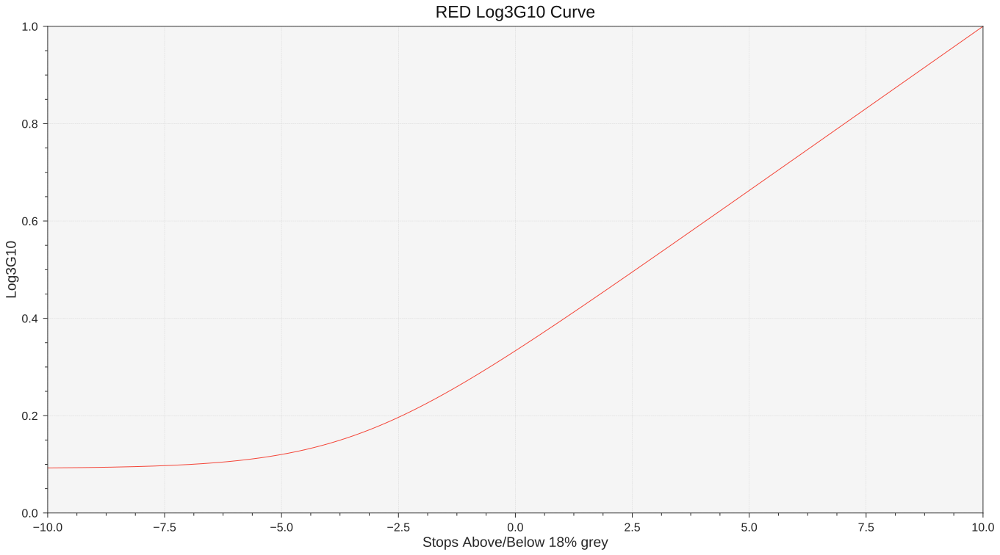
The decoding function is:
| (4.26) |
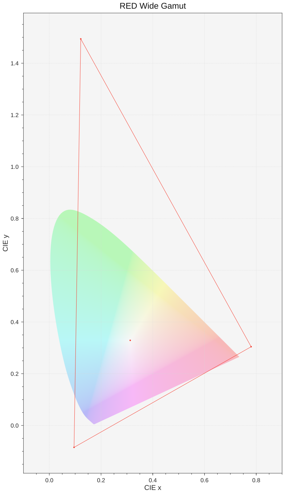
| Red | Green | Blue | White Point |
| 0.780308, 0.304253 | 0.121595, 1.493994 | 0.095612, -0.084589 | 0.3127, 0.3290 (D65) |
4.1.16 Sony SLog
Copyright © A.M.P.A.S
Sony has offered a range of encoding curves in their cameras, with the latest being S-Log3. The original S-Log is now deprecated, and not something likely to be seen on current productions. S-Log2 and S-Log3 are still both current. S-Log2 is normally paired with S-Gamut primaries, whereas S-Log3 may be paired either with S-Gamut3 or S-Gamut3.Cine primaries.
S-Gamut and S-Gamut3 use the same wide gamut primaries; it is simply that the matrices used in the camera to transform to them from the sensor native color space are different. As has been mentioned previously in Section 3.4.1, a 3x3 camera matrix can only ever be an approximation of the ideal transform to a set of encoding primaries. S-Gamut and S-Gamut3 use different optimizations. S-Gamut3 has the additional advantage that the transform to ACES is the same at all color temperatures, whereas for S-Gamut, two Input Transforms are provided by Sony for use under tungsten and daylight. S-Gamut3.Cine is slightly less wide gamut than S-Gamut3, and was designed to be more closely aligned with P3 primaries, making manual grading to P3 simpler. In a scene-referred workflow there is no benefit to this, and indeed recording in S-Gamut3.Cine will clip some colors which may be present in the scene, compared to S-Gamut3. Nonetheless, many people use S-Gamut3.Cine as the default camera setting, so it is important to ascertain which was used.
As with Canon footage, using Sony’s own software can be a useful way of reading metadata from the files which might not otherwise be available. Some Sony cameras also include XML files with the media, which can provide useful information.
The S-Log2 encoding function1 is:
| (4.27) |
The S-Log3 encoding function is:
| (4.28) |
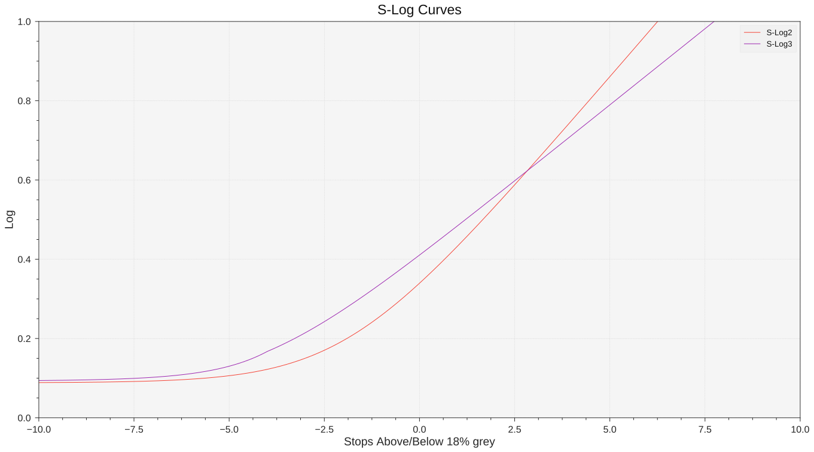
The S-Log2 decoding function is:
| (4.29) |
The S-Log3 decoding function is:
| (4.30) |
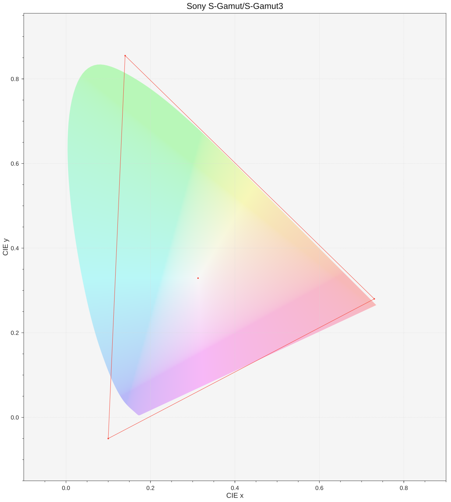
| Red | Green | Blue | White Point |
| 0.730, 0.280 | 0.140, 0.855 | 0.100, -0.050 | 0.3127, 0.3290 (D65) |
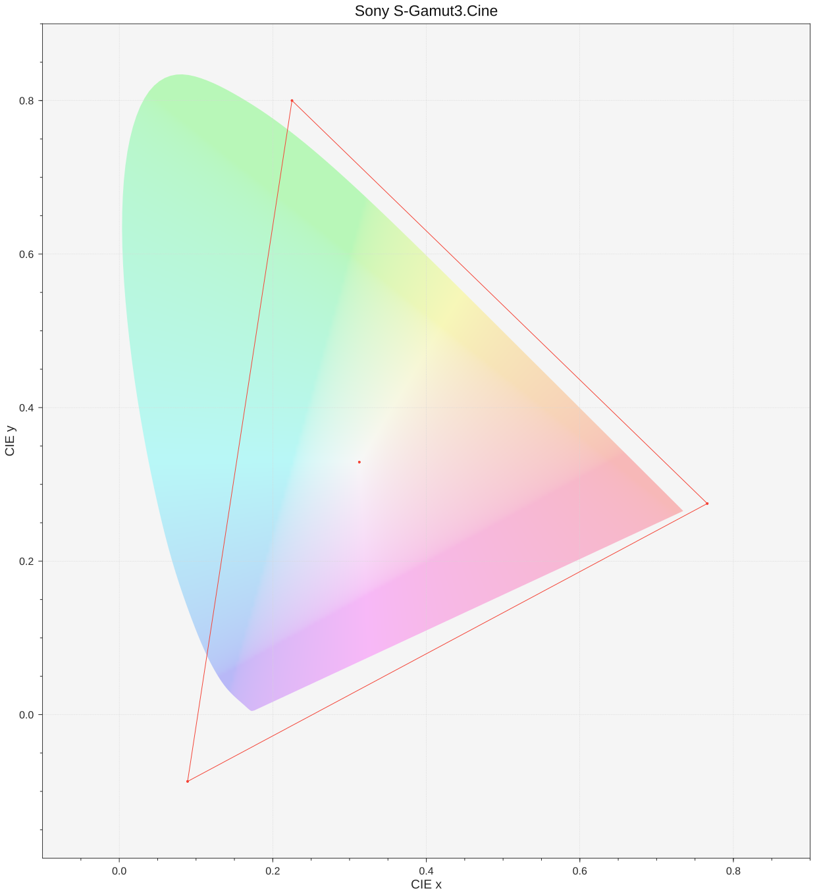
| Red | Green | Blue | White Point |
| 0.766, 0.275 | 0.225, 0.800 | 0.089, -0.087 | 0.3127, 0.3290 (D65) |
4.1.17 ACES2065-1
Pixel values >1 are present in the original, but clipped in this rendering.
Copyright © A.M.P.A.S
ACES2065-1 is a scene-referred linear encoding used for interchange of imagery in ACES workflows. Its primaries (AP0) were chosen to be able to encode all visible colors using positive values, so it encompasses the entire spectral locus. The primaries are therefore all physically unrealizable.
ACES2065-1 uses a white point which is close to D60, but differs slightly. Despite this, it is frequently casually referred to as “D60”, for example in the “D60 sim” ACES Output Transforms. See AMPAS TB-2018-001 /parenciteTheAcademyofMotionPictureArtsandSciences2018 for detail on the choice and derivation of the ACES white point.
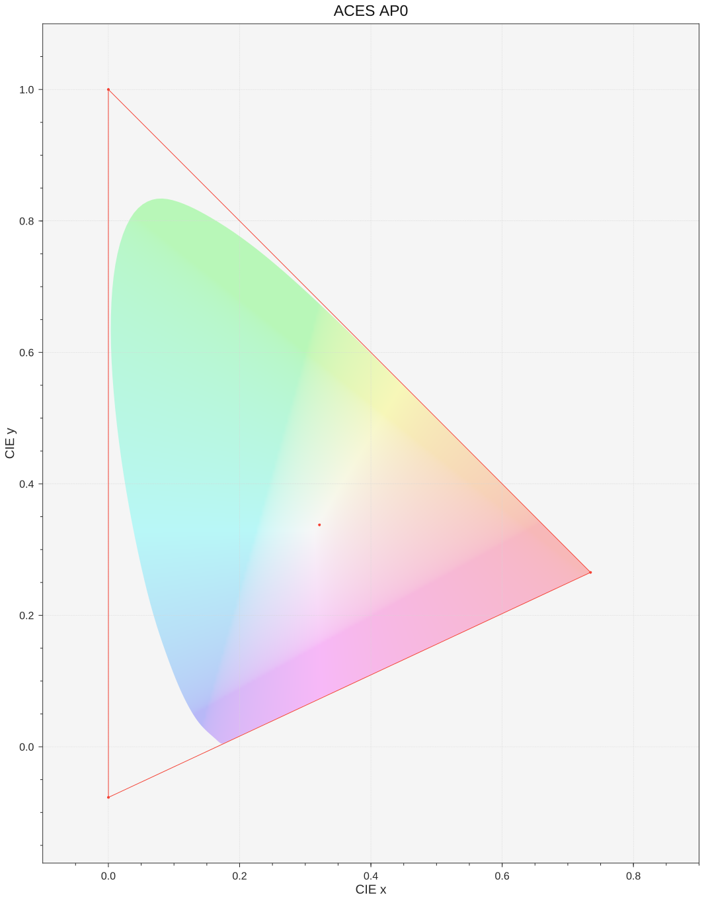
| Red | Green | Blue | White Point |
| 0.7347, 0.2653 | 0.0, 1.0 | 0.0001, -0.077 | 0.32168, 0.33767 |
4.1.18 ACEScg
Pixel values >1 are present in the original, but clipped in this rendering.
Copyright © A.M.P.A.S
ACEScg is an alternative ACES scene-referred linear encoding for use in CGI and compositing. Its primaries (AP1) although still slightly outside the spectral locus, correspond more closely to the red, green and blue of other color spaces, in particular Rec. 2020. See Section 3.5.6 for more information on why ACEScg is a suitable color space for CGI rendering. ACEScg uses the same ACES white point as all the ACES color spaces.
| Red | Green | Blue | White Point |
| 0.713, 0.293 | 0.165, 0.830 | 0.128, 0.044 | 0.32168, 0.33767 |
4.1.19 ACEScc
Copyright © A.M.P.A.S
ACEScc is a logarithmic variant of the ACEScg color space for use in grading. It is a pure log curve, so each stop change of exposure is represented by an equal offset of the ACEScc value throughout the range. It uses AP1 primaries, which are the same as those used by ACEScg. Being a pure log curve, ACEScc cannot encode negative values (although the ACES spec asks that implementers provide some means of handling negative values in order to preserve them through a transform to ACEScc and back). It encodes a very wide dynamic range, with 1.0 representing a linear value of 222.86, or 10.27 stops above mid-grey.
An integer form of ACEScc is ACESproxy, designed for on set live grading, such that CDL corrections applied to the 0-100% “IRE” range of ACESproxy will give the same result when the same corrections are applied to ACEScc. ACESproxy exists in 10 and 12-bit variants. ACEScc can be converted to ACESproxy with the following equation:
| (4.31) |
The encoding function of ACEScc is:
| (4.32) |
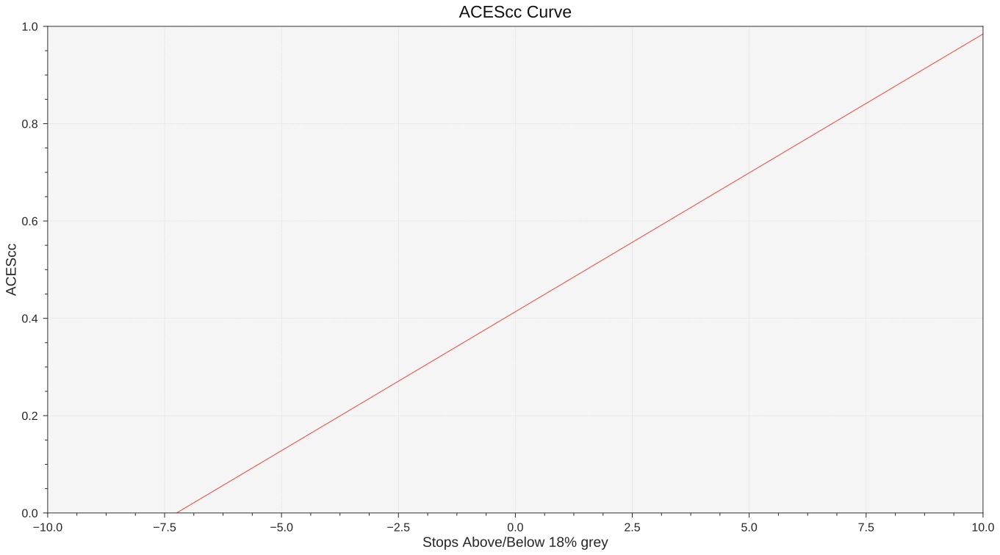
The decoding function is:
| (4.33) |
| Red | Green | Blue | White Point |
| 0.713, 0.293 | 0.165, 0.830 | 0.128, 0.044 | 0.32168, 0.33767 |
4.1.20 ACEScct
Copyright © A.M.P.A.S
ACEScct is a variation on ACEScc, which is identical through most of the curve but adds a linear portion near black to create a toe, and to allow for the encoding of negative values. Because the toe of the resulting curve makes it more similar to camera log encodings than the pure log of ACEScc, it responds in a more comparable way to grading operations.
Grades made to ACEScc or ACESproxy image data will give the same result over most of the range when applied to ACEScct image data, but the result in the shadows will differ, due to the toe.
The ACEScct encoding function is:
| (4.34) |
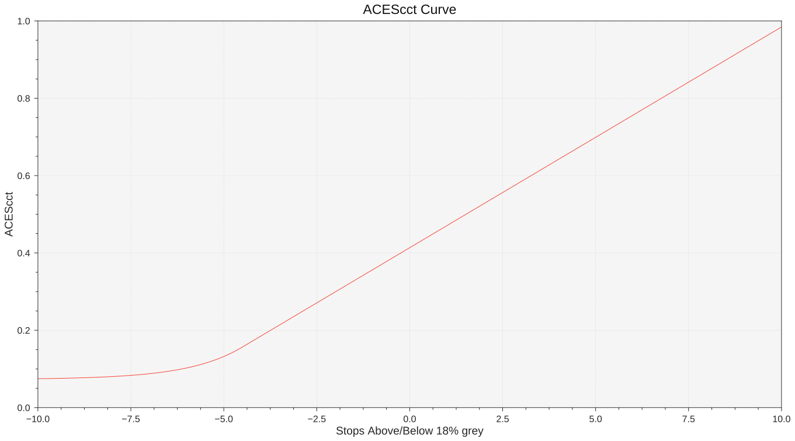
The decoding function is:
| (4.35) |
4.1.21 Cineon
Copyright © A.M.P.A.S
The Cineon log encoding differs from digital motion-picture camera log encodings in that Cineon is an encoding of the optical density of the film negative, which is itself logarithmic. The non-linearities and cross-channel effects of film mean that there are no CIE xy values which can be said to be the primaries of a Cineon encoding. This means that there is not one formula which precisely reverts Cineon film scans to scene-referred linear. Various functions are proposed for linearising film scans.
The Cineon linearization function used by Nuke (which RED also use as REDlogFilm) is:
| (4.36) |
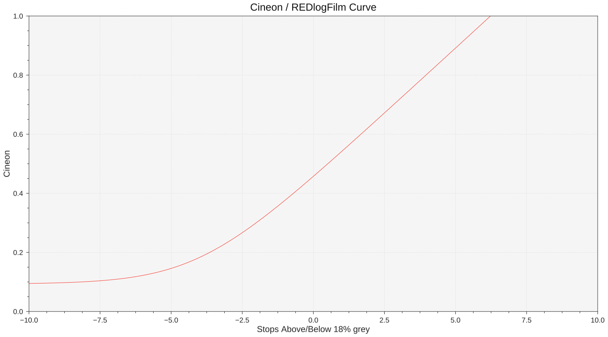
And its inverse is:
| (4.37) |
Another option is the “Pivoted log lin” formula (PLogLin):
| (4.38) |
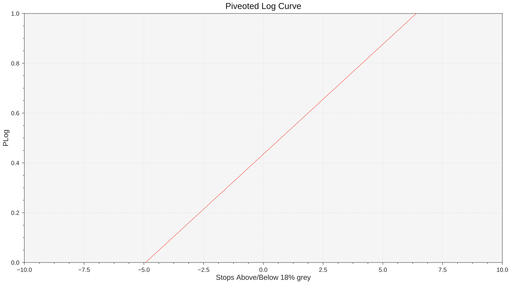
And its inverse:
| (4.39) |
The constants in the PLogLin equation are derived from a linear grey value of 0.18 mapping to a 10-bit value of 445, and a negative gamma of 0.6 with a density of 0.002 per 10-bit code value.
1The function here has been modified from that published by Sony in order to map reflectance to code value in the same manner as the published S-Log3 function. The same has been done for the decoding function.
The S-Log2 curve used in Nuke 11.3v1 and later is modified in this same way, but earlier versions were not, and versions earlier than 11.2v4 also contained an error in one of the constants. Thus the Colorspace node did not give a linearization matching the ACES IDT for S-Log2. The correct result could be obtained by using the OCIOColorSpace node with the ACES 1.0.3 OCIO config.